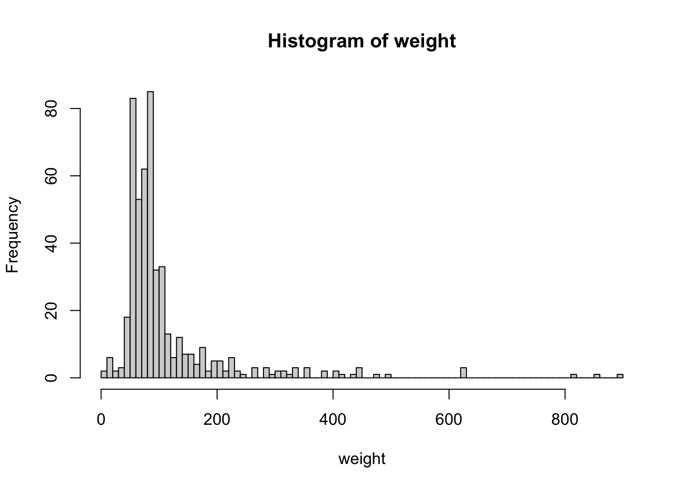

Warning: One or more parsing issues, call `problems()` on your data frame for details,
e.g.:
dat <- vroom(...)
problems(dat)
Rows: 734 Columns: 11
── Column specification ────────────────────────────────────────────────────────
Delimiter: ","
chr (8): name, Gender, Eye color, Race, Hair color, Publisher, Skin color, A...
dbl (3): ...1, Height, Weight
ℹ Use `spec()` to retrieve the full column specification for this data.
ℹ Specify the column types or set `show_col_types = FALSE` to quiet this message.
plot(heroes$Height, heroes$Weight)
В этом случае будет нарисована диаграмма рассеяния (точечная диаграмма, scatterplot), где каждая точка задается парой значений из этих векторов: значения из колонки Height используются как координаты по оси x, а соответствующие значения колонки Weight как координаты по оси y.
Функция plot() - это тоже универсальная (generic) функция, как и summary()(см. Глава 12.7). В качестве аргумента можете ей скормить просто один вектор, матрицу, датафрейм. Давайте попробуем использовать функцию plot() на встроенном датафрейме iris1:
Каждая строчка – один цветок ириса, числовые колонки содержат информацию о длине и ширине наружной (sepal) и внутренней (petal) долях околоцветника, в колонке Species содержится название сорта ирисов.
Давайте уберем последнюю колонку, чтобы у нас остались только числовые колонки:
Мы получили таблицу из диаграмм рассеяния! Для каждой пары колонок строится отдельная диаграмма рассеяния, что может быть очень удобно при исследовании данных.
Многие пакеты добавляют новые методы plot() для объектов из новых классов, поэтому функцию plot() имеет смысл пробовать на любых непривычных вам объектах.
13.2 Великая гистограмма
Другая распространенная функция — hist() — гистограмма (histogram):
Гистограмма – очень простая визуализация, которую при желании несложно нарисовать карандашом на бумаге, следуя простому алгоритму:
Весь диапазон значений в выборке делим на интервалы (обычно одинаковые, но можно и разные).
Считаем сколько точек попадает в каждый из интервалов.
Откладываем высоту столбцов в зависимости от количества точек в каждом интервале.
Главный вопрос здесь: на какие интервалы мы делим? В зависимости от этого гистограмма может выглядеть очень по-разному.
Количество интервалов можно задать самостоятельно с помощью аргумента breaks =:
hist(weight, breaks =4)
hist(weight, breaks =30)
hist(weight, breaks =100)

Попробовав различные значения, можно убедиться, что форма гистограммы может достаточно сильно изменяться в зависимости от выбранного количества интервалов2.
Для продвинутых: правило Стёрджеса и иже с ними
По умолчанию, функция hist() использует правило Стёрджеса(Sturges’ rule) для определения количества интервалов гистограммы: \[\displaystyle n=1+\lfloor \log _{2}N\rfloor\]Здесь \(N\) – размер выборки, а \(\lfloor \rfloor\) обозначают целую часть числа (т.е. округление вниз). Если мы возьмем вектор weight, длина которого 495, то получим 9 интервалов:
1+floor(log(length(weight), base =2))
[1] 9
Правило Стёрджеса – только один из алгоритмов для расчета количества интервалов в гистограмме! Есть и множество других, например, правило Фридмана-Диакониса (Freedman–Diaconis’ rule) и правило Скотта (Scott’s normal reference rule). Чтобы ими воспользоваться в функции hist(), нужно прописать breaks = "FD" или "Scott" соответственно.
13.3 Нестареющий боксплот
Ну и закончим на суперзвезде прошлого века под названием ящик с усами (boxplot with whiskers):
boxplot(Weight ~ Gender, heroes)
Здесь мы использовали уже знакомый нам класс формул. Они еще будут нам встречаться дальше, обычно они используются следующим образом: слева от ~ находится зависимая переменная, а справа - “предикторы”. Эта интуиция работает и здесь: мы хотим посмотреть, как различается вес в зависимости от пола.
Несмотря на свою популярность, ящик с усами – достаточно непростой тип графиков. С одной стороны, он неплохо помогает понять, как распределены данные. С другой стороны, немногие знают, как эти ящики и усы рисуются.
Начнем с линии в середине ящика – это медиана (а не среднее, как могло бы показаться). Низ и верх ящика – это Q1 и Q3 соответственно. А это значит, что высота ящика – это разница между Q1 и Q3, т.е. межквартильный размах.
А вот с усами все еще сложнее. Они строятся следующим образом: от края ящика откладываются полтора межквартильных размаха. Но ус рисуется не на этой границе (1.5 IQR), а по крайней точке внутри полутора межквартильных размахов. Если остаются значения за пределами полутора межквартильных размахов, то они отмечаются точками.
Очень часто эти точки называют “выбросами”, однако это может запутать: нет никакого магического алгоритма, который назначает эти точки выбросами. Точнее, алгоритм есть (и мы его теперь знаем), но в нем нет никакой магии. Почему именно квартили и медиана? А, главное, почему именно полтора межквартильных размаха? Просто так решили. Могли бы взять и 1, и 2, и 1.4, и 1.645 межквартильных размаха, просто потому что (а еще число 1.5 – число более красивое, чем в 1.4 и 1.645). Это может показаться удивительным, что в статистике, области математики, используются взятые с потолка числа, но скоро мы убедимся, что такое встречается сплошь и рядом.
13.4 Заключение
Возможности R для визуализации очень богатые, и некоторые даже утверждают, что их более чем достаточно. Главное преимущество встроенных функций для графики в R – возможность быстро нарисовать простой график с помощью одной функции, не подключая никаких дополнительных пакетов. Это делает базовые функции визуализации в R удобными для исследования данных.
iris – пожалуй, самый известный набор данных в мире, своего рода “Hello, world!” от мира науки о данных. Этот датасет был собран известным ботаником Эдгаром Андерсоном, но стал известен благодаря статье 1936 года известного статистика Роберта Фишера, в которой он использовал эти данные для демонстрации разработанного им метода дискриминантного анализа. С iris мы еще столкнемся в главе про многомерные методы анализа (Глава 23).↩︎
На самом деле, функция hist() будет использовать заданное количество интервал очень ориентировочно: на основе желаемого количества интервалов будут вычисляться интервалы с круглыми границами.↩︎
![]()